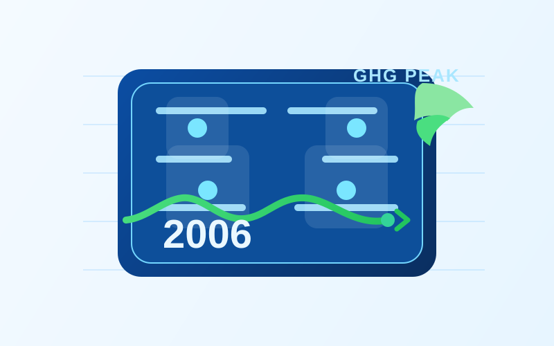
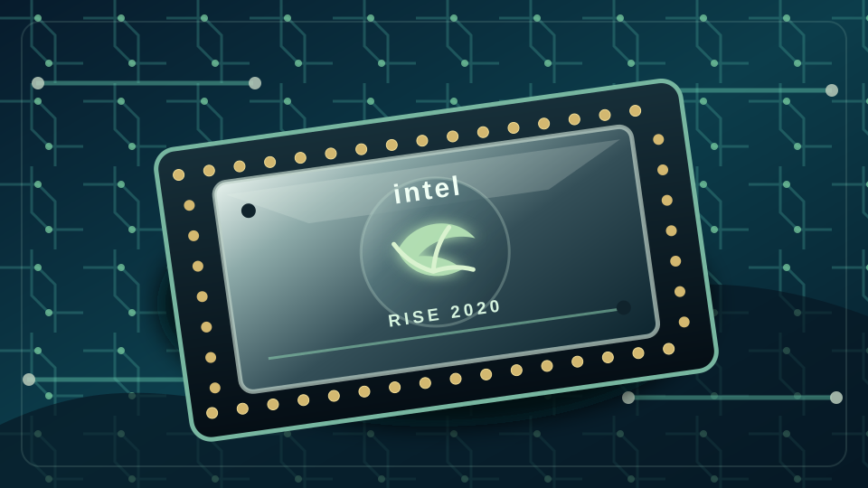
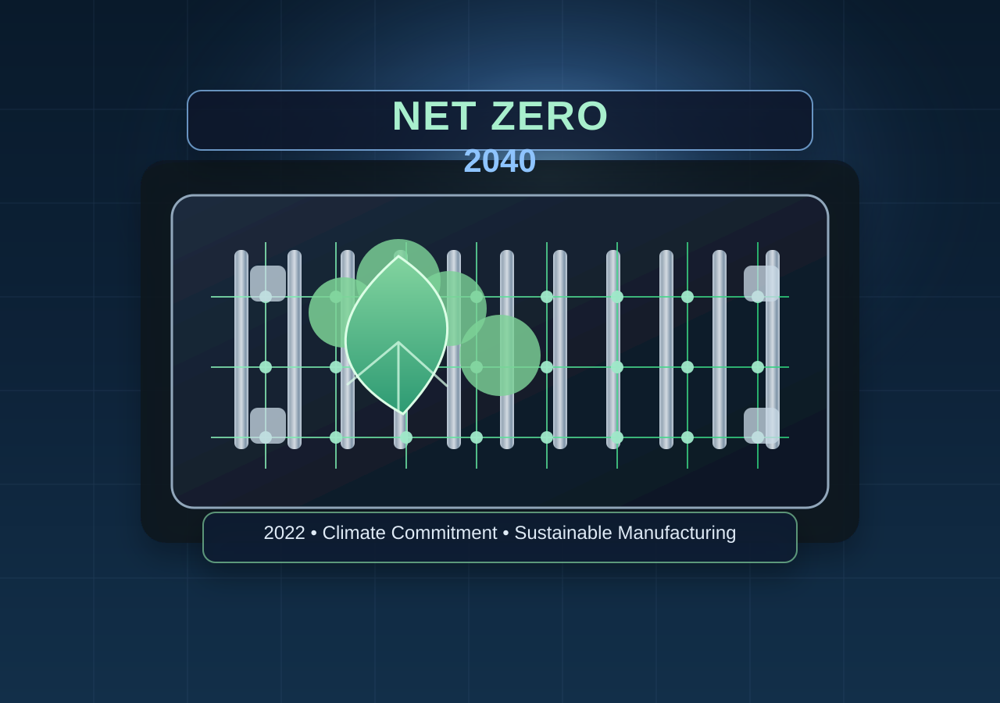
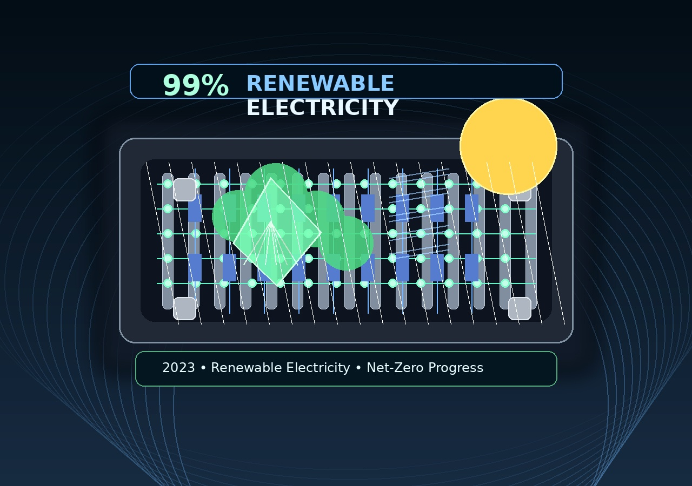
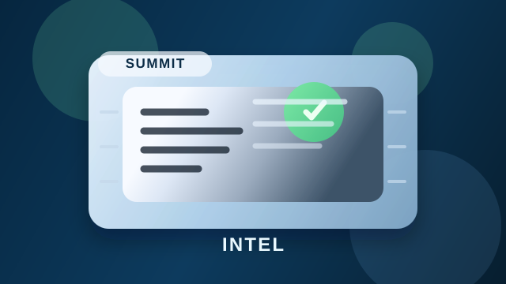

Intel Founded
NM Electronics becomes Intel Corporation, laying the foundation for decades of technological innovation.
Explore Intel's journey through time, discovering how our commitment to innovation has shaped a more sustainable future for technology and our planet.
Explore important milestones in Intel's history and sustainability journey.
NM Electronics becomes Intel Corporation, laying the foundation for decades of technological innovation.

Intel debuts the 4004, the world's first commercial microprocessor, helping ignite the microprocessor revolution.

The launch of the 8086 processor establishes the x86 architecture that continues to influence modern computing.

Intel introduces the 386 processor with 32-bit architecture, helping usher in a new era of performance and multitasking.

Intel's operations reach their highest annual greenhouse gas emissions. The company then invests in chemical abatement, renewable energy, and energy-efficient manufacturing.

Intel launches its RISE strategy and 2030 goals to drive progress in climate action, water stewardship, and waste reduction.

Intel announces its commitment to achieve net-zero greenhouse gas emissions for Scope 1 and 2 across its global operations by 2040.

Intel reaches 99% renewable electricity usage worldwide, helping reduce carbon emissions and supporting its long-term sustainability goals.

Intel hosts its first Sustainability Summit, bringing together suppliers, government officials, and industry leaders to collaborate on sustainable semiconductor manufacturing.
Learn more about the ways technology and sustainability can create a better future.
Intel is working to reduce greenhouse gas emissions, increase renewable electricity, and reach net-zero emissions.
Learn MoreResponsible water management helps Intel protect valuable water resources and support communities around the world.
Learn MoreIntel works to reduce waste and improve resource efficiency throughout its manufacturing and operations.
Learn MoreStay informed about sustainability, innovation, and Intel's environmental progress.